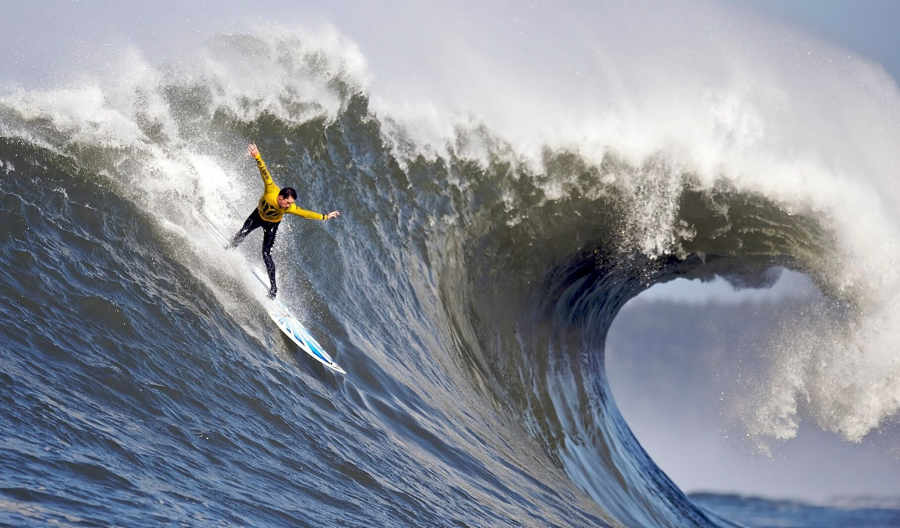

Arielle's Web Design Site
Images

Engagement
- What kind of photos are good to encode using JPEG?
JPEG is best for photographs with lots of colors and gradients, like portraits and landscapes
- What kind of photos are good to encode using GIF?
GIF is best for simple images with few colors, such as icons, logos, and small animations
- What is unique about the PNG format?
PNG supports transparency and keeps high image quality without losing da
- How do you resize your photo to the size it should be displayed?
You resize photos using photo editing software before adding them to your website.
- Why should you resize photos using photo editing software instead of resizing it using CSS?
Resizing images with software reduces file size and improves website performance, while CSS only changes how the image looks
- What is CSS validation?
CSS validation checks your CSS code for errors and makes sure it follows proper standards.